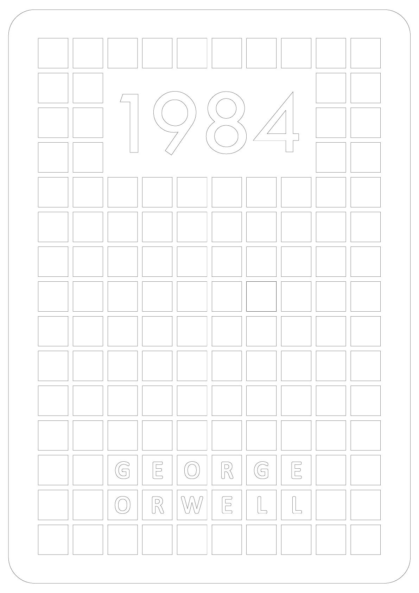
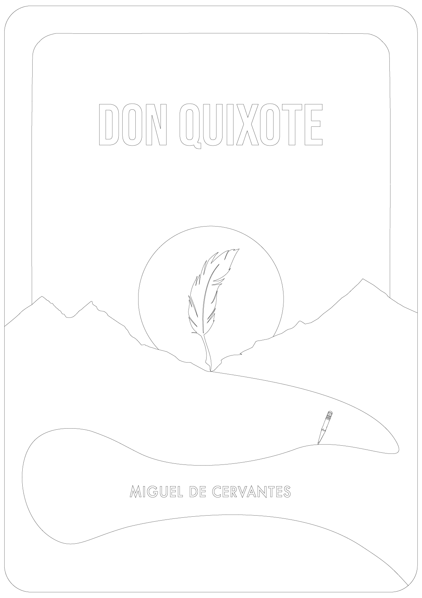

Velkommen til Kolofon.
Vi forvandler digital præcision til fysisk nærvær og skaber premium akrylvægkunst, der ikke bare observeres, men opleves.


Vi forvandler digital præcision til fysisk nærvær og skaber premium akrylvægkunst, der ikke bare observeres, men opleves.
